2
2
TL;DR
We canVisual data is largely orthogonal to language, with minimal impact on text perplexity. Multimodal co-training shows positive transfer for VQA, image generation, and world modeling. unify multimodal pretraining with RAERepresentation Autoencoders (e.g. SigLIP 2) excel at both visual understanding and generation with a single encoder, eliminating the need for dual representations. and MoEMixture-of-Experts is well suited for multimodal pretraining — it naturally learns modality specialization and bridges the vision-language scaling asymmetry..
The visual world is the next frontier for advancing foundation models beyond language. Despite growing interest, the design space for native multimodal pretraining remains largely uncharted. We seek to provide empirical clarity through controlled, from-scratch experiments. We adopt the Transfusion framework with next-token prediction for language and diffusion for vision, and train on data ranging from pure text to raw video, image / text pairs, and even action-conditioned video. We explore the visual representation, data composition, MoE design, and the scaling behavior of vision vs. language.
Unifying Understanding and Generation with RAE
Prior convention holds that visual understanding and generation require separate encoders — typically a semantic encoder (e.g. SigLIP 2) for understanding and a VAE for generation. This duality complicates model design and adds overhead to both training and inference. Recent work on Representation Autoencoders (RAE), however, shows that diffusion can operate effectively in high-dimensional semantic latent spaces, suggesting that a single encoder may suffice for both tasks.
We study three families of encoders — VAEs (SD-VAE, FLUX.1), semantic encoders (SigLIP 2, DINOv2, WebSSL), and raw pixels — in a controlled setting at 520B text + 520B multimodal tokens. All encoders achieve comparable text perplexity, confirming that the choice of visual representation has minimal impact on language capabilities. For vision, semantic encoders consistently outperform VAEs on both understanding and generation: SigLIP 2 achieves the highest DPGBench, GenEval, and VQA scores simultaneously, followed by WebSSL-L.
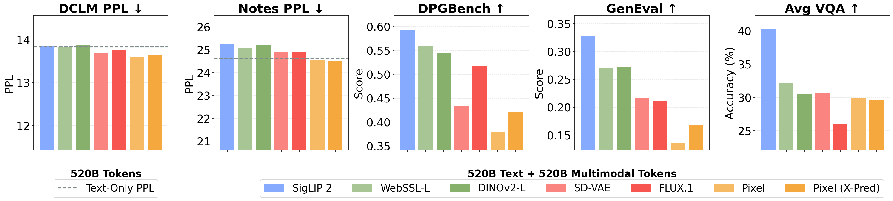
RAE outperform VAEs for both generation and understanding. RAE (SigLIP 2) achieves the highest scores on DPGBench, GenEval, and VQA while maintaining text perplexity comparable to the text-only baseline.
Suggestion: Adopt a single RAE-based encoder (e.g. SigLIP 2 or WebSSL). It simplifies the architecture and achieves both strong visual understanding and generation, while preserving text performance.
Vision and Language are Complementary
A central concern in unified pretraining is whether adding visual data inevitably degrades language performance — the so-called "modality tax." We study this by training on combinations of text, raw video, image-text pairs (MetaCLIP), and action-conditioned video, all at 520B text + 520B multimodal tokens with a text-only baseline at 520B tokens. We find that Text + Video matches and sometimes even improves upon the text-only baseline in perplexity, suggesting that raw visual data is compatible with language modeling. The observed degradation from image-text data stems not from vision itself, but from distributional shifts in the text captions. However, adding multimodal data in general has a slight impact on out-of-distribution text performance, as shown by the perplexity on the Notes dataset.
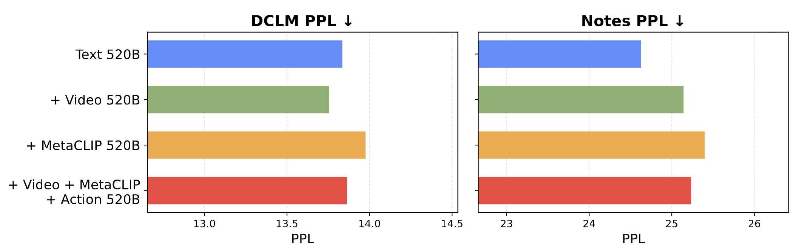
Visual data does not compete with text. Text + Video matches the text-only perplexity baseline. The perceived "modality tax" stems from text distribution shifts in image captions, not from the visual signal itself.
When we measure cross-modal synergy systematically, multimodal co-training consistently exceeds unimodal performance for visual generation. This effect also extends to understanding: supplementing 20B VQA tokens with general-purpose data (text, video, or image-text) yields higher accuracy than scaling task-specific VQA data to 100B alone.
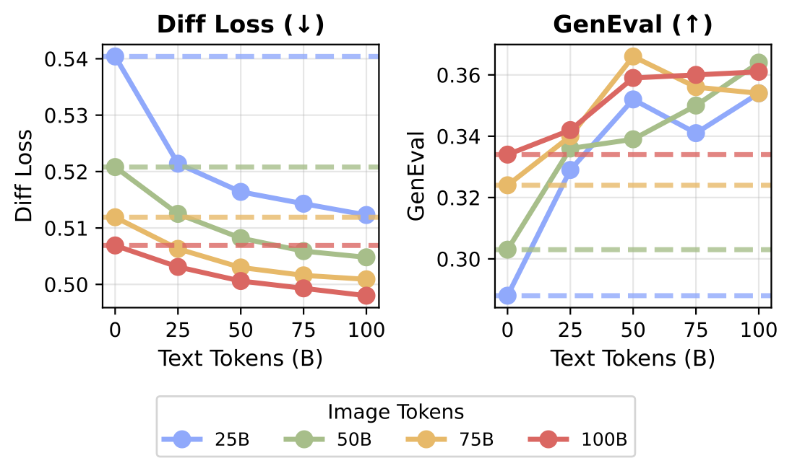
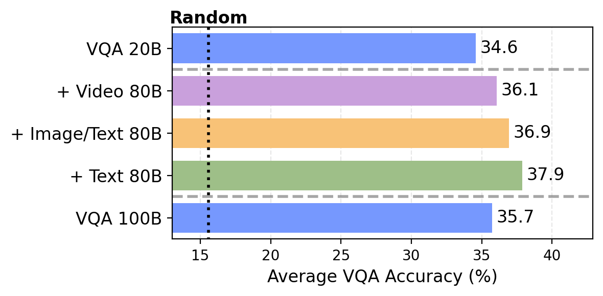
General pretraining outperforms specialized scaling. Left: Vision and language are mutually beneficial. Adding text tokens to a fixed amount of image tokens improves image generation. Right: Supplementing 20B VQA tokens with general pretraining data yields higher accuracy than scaling task-specific VQA data to 100B.
Suggestion: Train with multimodal data (e.g. raw video, image-text). Visual data minimally interferes with language modeling, while unlocking positive synergy for downstream capabilities.
World Modeling Emerges from General Pretraining
Given that vision and language are complementary, we explore whether unified multimodal models can learn world modeling — without any architectural changes. We adopt the Navigation World Model (NWM) setting, where the task is to predict the next visual state given context frames and a navigation action. Unlike prior work which uses specialized action encoders, we represent actions directly as text tokens, framing the task as video + text → image prediction within our standard model.
We find that world modeling capabilities emerge primarily from general multimodal pretraining rather than domain-specific data. Adding unsupervised video data yields the largest gain — outperforming scaling in-domain NWM data alone. More strikingly, when we vary the ratio of domain-specific data while keeping total training data fixed, performance saturates at just 1% in-domain data. This suggests that the core capability is acquired from general pretraining, and in-domain data just helps the model to learn the specific task format. This also implies that to build better world models, we do not necessarily have to collect large-scale action-conditioned data — we can also leverage the abundance of general data available.
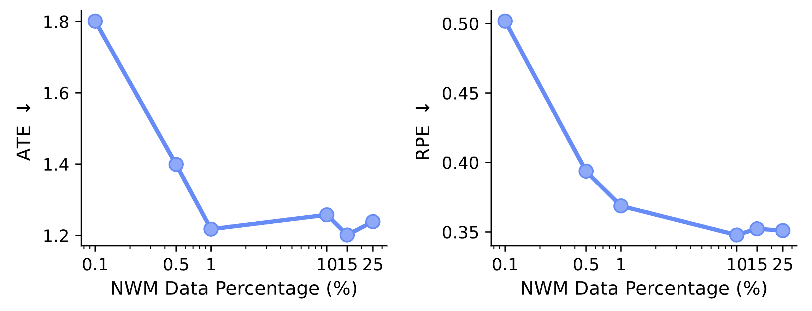
World modeling transfers with minimal alignment. Performance saturates at just 1% in-domain data, suggesting that the core capability is acquired from general multimodal pretraining.
We show some qualitative samples of navigation with free-form language and WASD-style navigation actions. Native multimodal pretraining enables the model to generalize out-of-distribution, and allows the use of a nearly unlimited set of actions, via natural language, unlike recent works such as Genie 3 which can only utilize a limited set of pretrained actions. Note that we do not make any architectural changes to enable world modeling — we simply pass in actions as text tokens. See the paper for more qualitative examples.
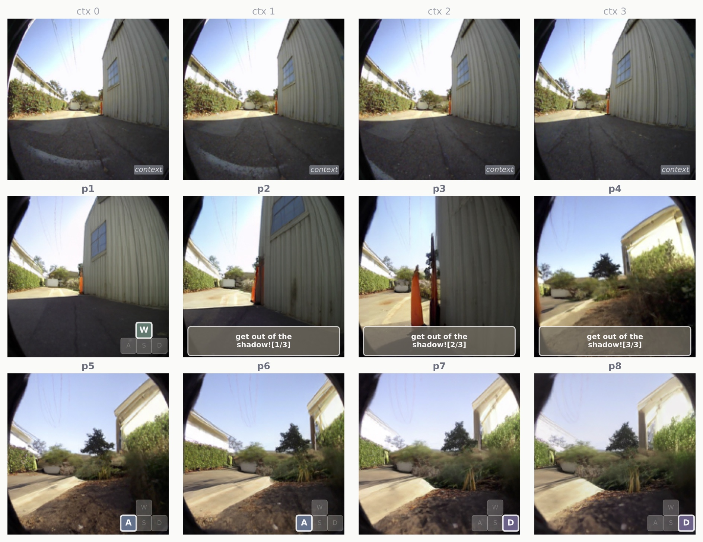
The model learns controllable future prediction. Given four context frames (ctx0–ctx3), the model predicts future frames conditioned on both free-form natural language and WASD-style navigation actions.
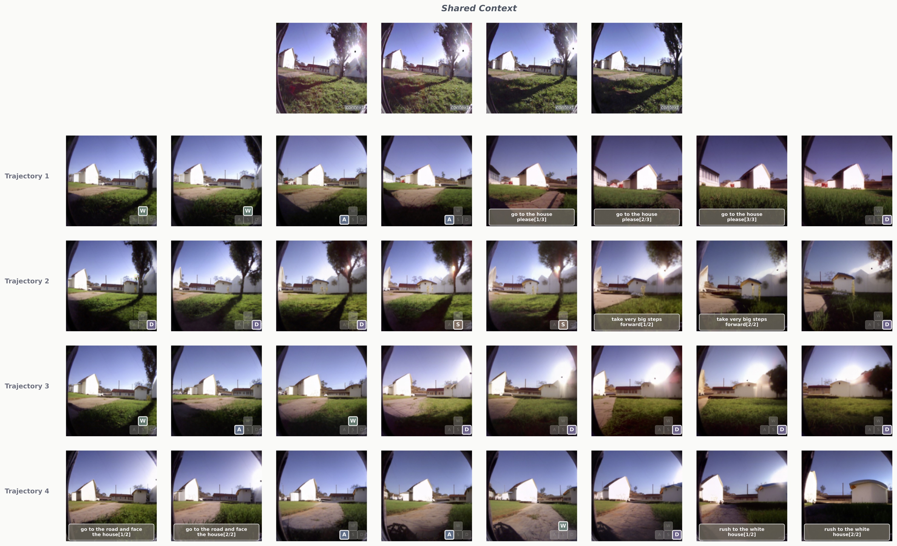
Simulating counterfactuals. Given four context frames, the model predicts four counterfactual action trajectories using a mixture of free-form natural language and WASD-style navigation actions.
Takeaway: World modeling capabilities emerge from broad multimodal pretraining — general video data outperforms specialized domain scaling, and as little as 1% in-domain data suffices for unlocking new capabilities.
Unified Multimodal Architecture Design
Given the Transfusion framework, two key design questions remain: 1) What visual representation should the model use? and 2) How should parameters be allocated across modalities? We walk through these below — each step is validated by controlled experiments.
Step 1 FFN Variants: Shared vs. Modality-Specific
The Transfusion baseline shares all FFN parameters across text and vision. A simple first improvement is to give each modality its own FFN — "modality-specific FFNs." We find that modality-specific FFNs improve performance across the board.
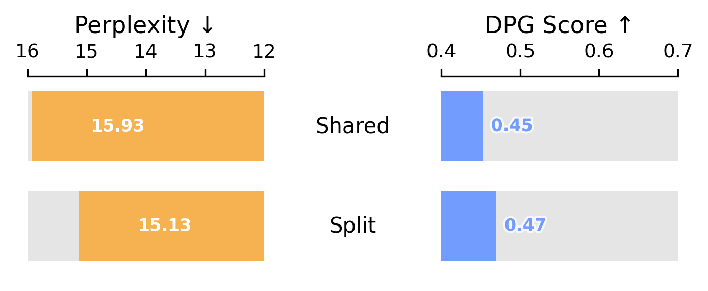
Step 2 Vision Encoder: VAE vs. RAE
With modality-specific FFNs, we compare vision encoders: SD-VAE, Flux.1, a dual-encoder (SigLIP + SD-VAE), and a single RAE (SigLIP 2). SigLIP 2 achieves the best overall text perplexity and image generation performance.
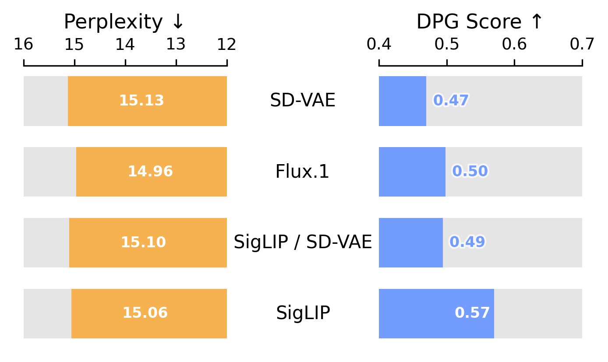
Step 3 Parameter Separation: Dense to MoE
With SigLIP 2 as the encoder, we explore how to allocate parameters across modalities. MoE clearly outperforms all other methods for parameter separation.
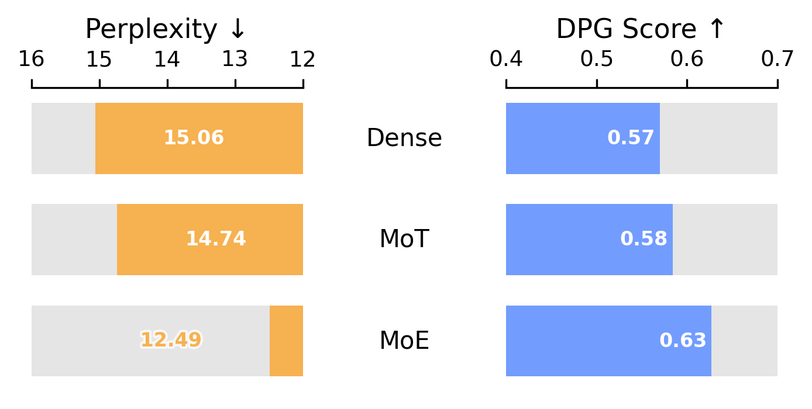
Step 4 Prediction Target: x-Prediction
Finally, we compare diffusion prediction targets. x-prediction achieves a good trade-off between competitive text perplexity and better image generation.
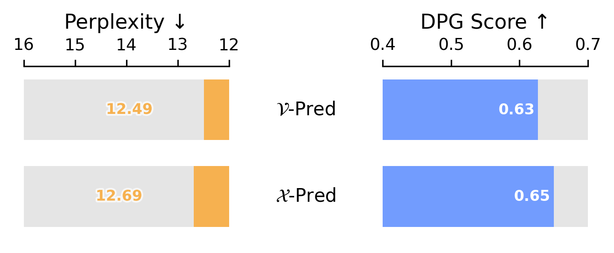
Developing MoE for Multimodal Models
Modality-specific FFNs improve multimodal pretraining by giving each modality its own parameters. We take this principle further with Mixture-of-Experts, which learns a dynamic, data-driven decomposition of the FFN layers, rather than relying on hand-designed separation. We study expert granularity, sparsity, and design choices. Fine-grained experts are critical (G=16 saturates performance), and per-modality shared experts outperform global ones. Most remarkably, modality specialization emerges naturally: the majority of experts specialize in text, but vision and multimodal experts increase in later layers. Vision experts are general-purpose — the same experts handle both understanding and generation with high correlation (r > 0.9) across all layers.
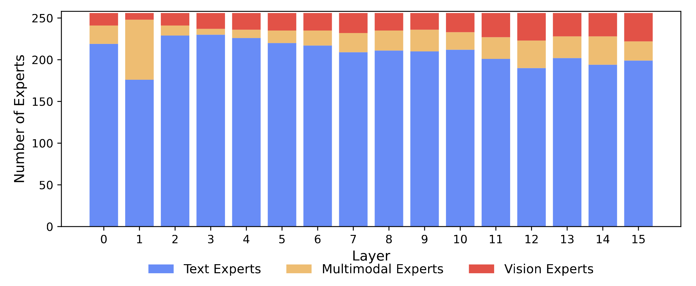
Modality specialization emerges naturally. Most experts are text-focused, but the proportion of vision and multimodal experts increases with network depth — without any explicit modality routing constraints.
Sparse scaling is highly effective: increasing total experts from 32 to 1008 at fixed active compute consistently improves both language and vision. Since active parameters remain constant, MoE provides an efficient scaling strategy — capacity grows without increasing training or inference costs. Notably, RAE-based models successfully leverage the added capacity to improve both diffusion and text loss, while VAE-based models stagnate at higher expert counts for diffusion loss.
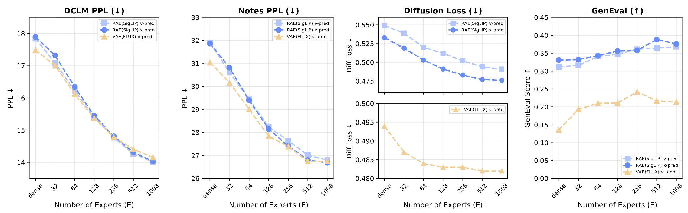
Sparsity scales multimodal performance. At fixed active compute (16 experts), increasing total expert count from 32 to 1008 consistently improves both language (lower PPL) and vision (lower diffusion loss, higher GenEval).
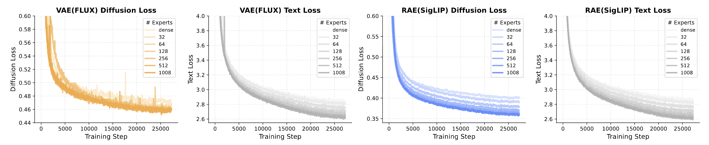
RAE scales with sparsity; VAE stagnates. Text loss improves consistently regardless of encoder. Diffusion loss continues scaling for RAE (SigLIP) but stagnates for VAE (FLUX) at higher expert counts.
Putting It All Together
Combining the best choices thus far — RAE encoder (SigLIP), MoE parameter separation, and x-prediction — yields cumulative gains at every step. Starting from the Transfusion baseline, each improvement progressively improves both text perplexity and image generation quality, validating our design conclusions from this controlled empirical study.
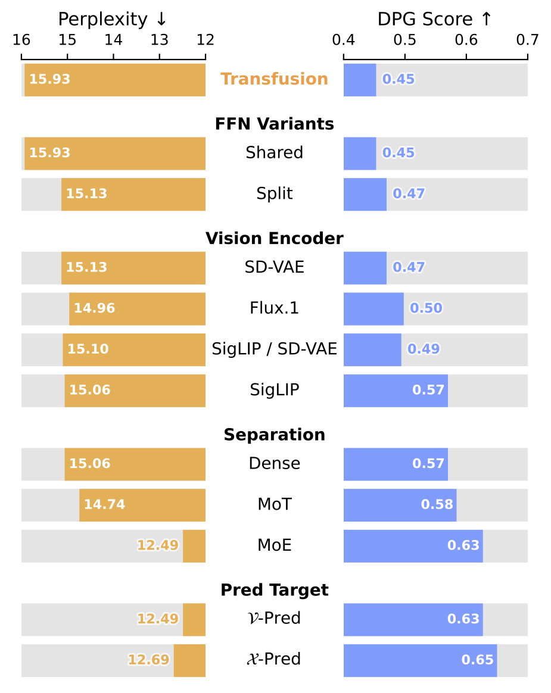
Cumulative impact of design choices. Starting from the Transfusion baseline, each improvement — modality-specific FFNs, RAE encoder (SigLIP), MoE, and x-prediction — progressively improves both text perplexity and image generation (DPG Score).
Suggestion: Use MoE in unified models. It naturally learns modality specialization and provides efficient scaling, by growing capacity without increasing active compute.
Vision and Language Scale Differently
Prior scaling studies focus on language models; few examine how vision and language scale jointly. We conduct IsoFLOP experiments — sweeping model sizes and token counts at fixed compute budgets — to derive scaling laws for both modalities within a single unified model. In dense models, we uncover a fundamental asymmetry: language scales similarly to Chinchilla (Dopt ∝ C0.53), while vision is significantly more data-hungry (Dopt ∝ C0.63). A single compute-optimal trend does not exist — scaling a unified model requires balancing these competing requirements.
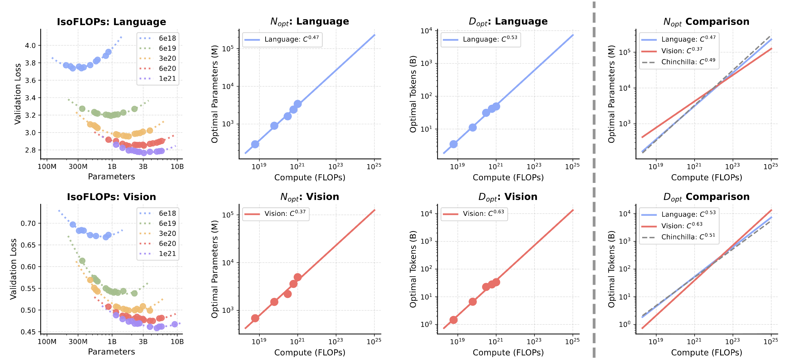
Scaling laws for unified dense models. Vision requires more data relative to parameters (Dopt ∝ C0.63) while language follows near-balanced Chinchilla scaling (Dopt ∝ C0.53).
MoE architectures alleviate this asymmetry. The gap in scaling exponents shrinks from 0.10 (dense) to 0.05 (MoE), as language scaling shifts to become more data-hungry — effectively harmonizing with vision. At matched FLOPs, MoE allocates 45% fewer active parameters while training on 2–2.5× more tokens, leveraging 3–4× total capacity through inactive experts. The ability of sparse architectures to harmonize the scaling requirements of different modalities makes it well-suited for unified multimodal training.
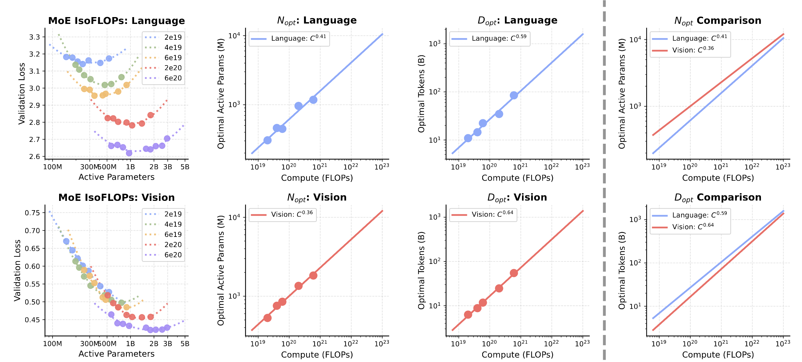
MoE narrows the vision-language scaling gap. The exponent gap shrinks from 0.10 (dense) to 0.05 (MoE). MoE harmonizes the divergent scaling behaviors by making language more data-hungry to match vision.
Takeaway: Vision and language follow asymmetric scaling laws within even the same model. MoE bridges this gap and harmonizes the asymmetry, providing an efficient and effective path to scale unified multimodal pretraining.
This page highlights our key findings. The full paper contains substantially more experiments, analysis, and discussion — we invite interested readers to read the paper for the complete picture.
Citation
@article{tong2026beyond,
title={Beyond Language Modeling: An Exploration of Multimodal Pretraining},
author={Tong, Shengbang and Fan, David and Nguyen, John and Brown, Ellis and Zhou, Gaoyue and Qian, Shengyi and Zheng, Boyang and Vallaeys, Th{\'e}ophane and Han, Junlin and Fergus, Rob and Murray, Naila and Ghazvininejad, Marjan and Lewis, Mike and Ballas, Nicolas and Bar, Amir and Rabbat, Michael and Verbeek, Jakob and Zettlemoyer, Luke and Sinha, Koustuv and LeCun, Yann and Xie, Saining},
year={2026}
}